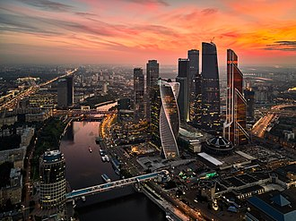

Rusia are o economie mixtă cu venituri medii spre ridicate cu resurse naturale enorme, îndeosebi țiței și gaze naturale. Este a 12-a economie a lumii după PIB nominal și a șasea după paritatea puterii de cumpărare (PPC). De la începutul secolului al XXI-lea, consumul intern mai ridicat și stabilitatea politică au stimulat creșterea economică a Rusiei. Țara a încheiat anul 2008 cu al nouălea an consecutiv de creștere, dar aceasta a încetinit odată cu declinul prețului petrolului și gazelor. PIB real pe cap de locuitor, luâng în calcul PPP era de 19.840 în 2010. Creșterea a fost în principal alimentată de bunurile și serviciile netranzacționate pentru piața internă, și nu de petrol și exporturile de resurse minerale. Salariul mediu nominal în Rusia era de 967 de dolari pe lună la începutul lui 2013, o creștere de la valoarea de 80 de dolari din 2000. În mai 2016, salariul mediu nominal lunar scăzuse însă la 450 de dolari pe lună, și impozitarea veniturilor individuale se făcea la o cotă de 13% pentru majoritatea veniturilor. Circa 19,2 milioane de ruși trăiau sub limita sărăciei în 2016, o creștere semnificativă de la 16,1 milioane în 2015. Șomajul în Rusia era de 5,4% în 2014, o scădere de la circa 12,4% în 1999. Oficial, circa 20–25% din populația Rusiei este clasificată drept clasă de mijloc; unii economiști și sociologi consideră însă că această cifră este exagerată și că fracția reală este pe la 7%. După Statele Unite, Uniunea Europeană și alte țări au impus sancțiuni economice după anexarea Crimeei, fapt care, combinat cu scăderea prețului petrolului, a dus la scăderea drastică a clasei de mijloc rusești.
Petrolul, gazele naturale, metalele și lemnul reprezintă peste 80% din exporturile Rusiei. Din 2003, exporturile de resurse naturale au început să-și piardă din importanța economică după ce piața internă s-a întărit considerabil. În 2012, sectorul petrol-gaze reprezenta 16% din PIB, 52% din veniturile la bugetul federal și peste 80% din totalul exporturilor. Veniturile din exporturile de petrol au permis Rusiei să-și crească rezervele valutare de la 12 miliarde de dolari în 1999 la 597,3 miliarde de dolari la 1 august 2008. În aprilie 2017, rezervele valutare ale Rusiei scăzuseră însă la 332 miliarde de dolari. Politica macroeconomică a ministrului de finanțe Alexei Kudrin a fost una prudentă și solidă, veniturile excedentare fiind stocate în Fondul de Stabilizare al Rusiei. În 2006, Rusia își plătise o parte din uriașele ei datorii istorice, rămânând cu una din cele mai mici datorii externe dintre marile economii. Fondul de Stabilizare a ajutat Rusia să iasă din criza financiară globală într-o stare mult mai bună decât se așteptaseră mulți experți.
Moscow City Bussines Center
Un cod fiscal mai simplificat, adoptat în 2001, a redus povara fiscală asupra oamenilor și a crescut dramatic veniturile statului. Rusia are o cotă unică de impozitare de 13%, fiind astfel al doilea cel mai atrăgător sistem de impozitare personală pentru persoane individuale, după Emiratele Arabe Unite. Potrivit Bloomberg, Rusia este considerată mult înaintea majorității celorlalte țări cu resurse bogate, la capitolul dezvoltare economică, cu o lungă tradiție a educației, științei și industriei. Țara are o mai mare proporție de absolvenți de învățământ superior decât orice altă țară din Eurasia.